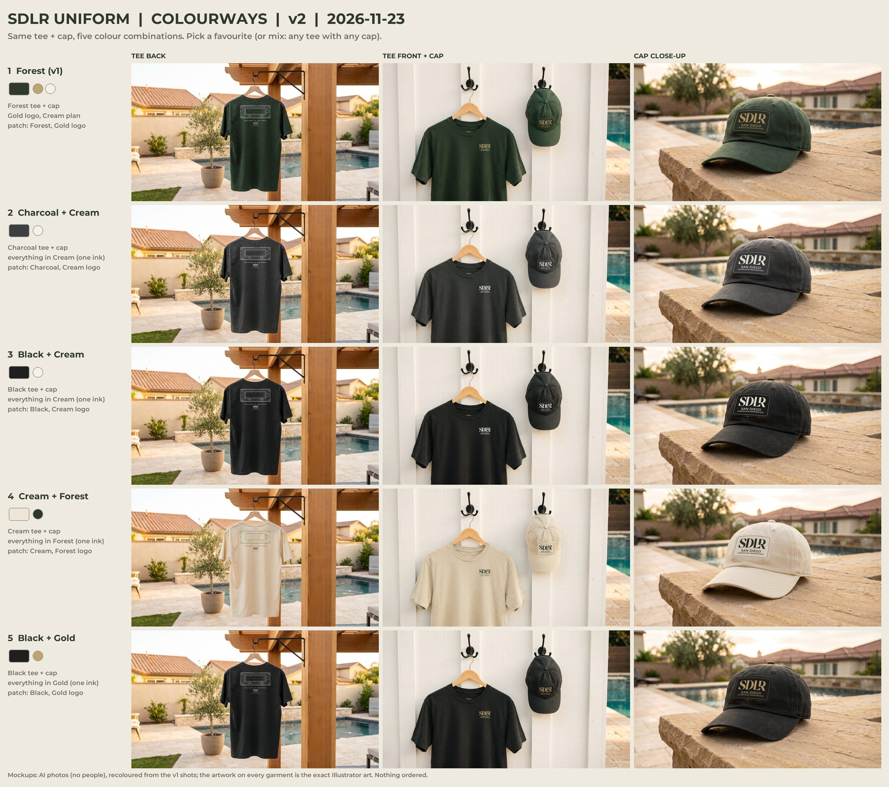
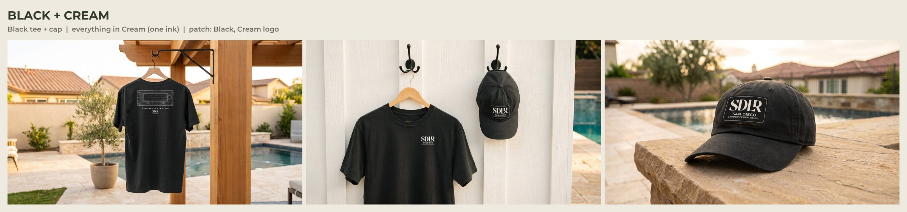
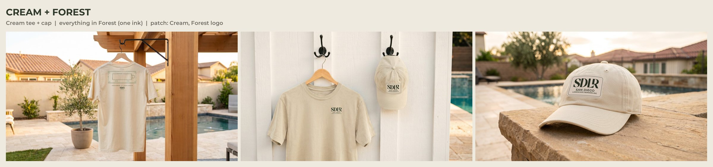

San Diego Landscape Remodeling · Uniform · Version 2 · Colourways
The same tee and cap in five colour combinations
Version 1's design, unchanged: the full SDLR logo on the chest, the Designed in San Diego plan, logo and website on the back, and a woven logo patch on the cap. No phone number, because this set is for upper management, friends and family. Pick the one you like best. You can also mix them, any tee with any cap.
WaitingTell us which one. Nothing has been ordered.

All five side by side. Each row is one colour combination: the tee back, the tee front with the cap, and the cap close up.
1 · Forest (version 1)
Forest tee and cap. Gold logo, cream plan and words. The patch is Forest with a gold logo and a cream border. The brand look.
2 · Charcoal + Cream
Charcoal tee and cap with everything in cream. Softer and more relaxed than black.
3 · Black + Cream

Black tee and cap with everything in cream. The sharpest contrast of the five, and it dresses up the easiest.
4 · Cream + Forest

Cream tee and cap with everything in Forest. The lightest, beachiest one. It also shows dirt first, so it's better for days off than for job sites.
5 · Black + Gold
Black tee and cap with everything in gold. The richest-looking one. Gold here is the flat brand gold ink; a metallic gold ink is an option to ask the printer about.
What changes between them
Colourway
Tee
Tee ink
Cap and patch
1 · Forest
Forest
Gold logo, cream plan and words (two inks on the back)
Forest cap; Forest patch, gold logo, cream border
2 · Charcoal + Cream
Charcoal
Cream, everything (one ink)
Charcoal cap; charcoal patch, cream logo and border
3 · Black + Cream
Black
Cream, everything (one ink)
Black cap; black patch, cream logo and border
4 · Cream + Forest
Cream
Forest, everything (one ink)
Cream cap; cream patch, Forest logo and border
5 · Black + Gold
Black
Gold, everything (one ink)
Black cap; black patch, gold logo and border
Good to know
Colourways 2 to 5 print in one ink. Screen printing is priced per colour, so one ink usually costs less than Forest's two on the back.
The inks stay brand colours. Every print is Forest #2E382B, Gold #BDA572 or Cream #F5F1E8. Charcoal and black are only shirt and cap colours.
Each patch matches its cap. The woven background is the cap colour, so the logo looks stitched into the hat instead of stuck on.
Charcoal and black look close in photos. In person charcoal is a soft dark grey and black is true black. Ask the blank supplier for a swatch card before choosing.
The layered Illustrator file (one artboard per print location per colourway), the mockups and the README are in Drive: 02 Clients/san-diego-landscape-remodeling/assets/print-ready/apparel/2026-11-23-uniform-tee-cap-v2-colorways/. Version 1 is unchanged.